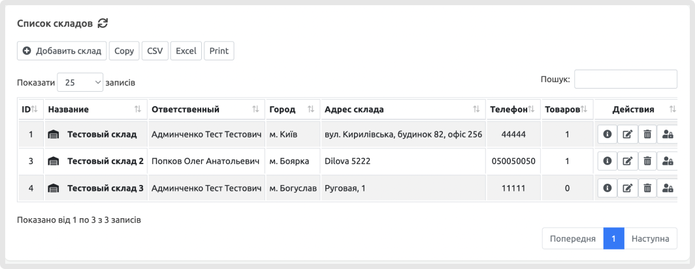
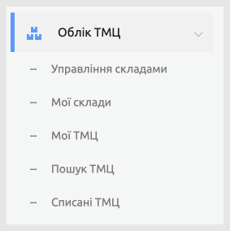

У цей непростий час ми працюємо для вас у переважній більшості регіонів України та надаємо широкий спектр можливостей мільйонам наших користувачів.
На відміну від інших CRM, наша команда експертів з маркетингу, продажу та операцій діє як продовження команд наших клієнтів. Разом ми розробляємо повноцінні багатоканальні стратегії та керуємо ними та підвищуємо лояльність клієнтів за рахунок швидкого і якісного обслуговування.
Кожній компанії дуже важливим є правильне планування завдань. Завдяки інтегрованому в систему календарю завдань кожен із співробітників може планувати свою діяльність будь-коли заздалегідь. Проте календар — це інструмент для планування власних завдань. Це також можливість делегувати завдання іншим співробітникам та забезпечувати їх належне виконання, що гарантує синхронізацію дій. В обох випадках програма забезпечує автоматичне сповіщення про майбутнє завдання.
Спростивши управління воронкою продажів за допомогою ефективних функцій та дає вам можливість планомірніше вести продажі, керувати новими страховими вимогами і підвищувати ефективність страхових агентів, зберігаючи при цьому загальний огляд продуктивності кожної команди.
Ці процеси підтримуються нашим технічним досвідом та партнерськими відносинами з багатьма компаніями. Позбавтеся етапів, які створюють непотрібні перешкоди та завдання, оптимізувавши процес розгляду страхових випадків, який порадує ваших клієнтів та дасть можливість агентам закривати більше угод.
Система підійде багатьом компаніям, пов'язаним із продажем та обслуговуванням автомобілів. Чим більший масштаб компанії — тим більшою є необхідність автоматизувати бізнес-процеси за допомогою системи Ye Sync +. Незважаючи на те, що система під усі потреби автодилерів, після кастомізації вона може використовуватись суміжними бізнесами.
CRM для салонів краси дозволяє збирати, зберігати індивідуальні дані клієнтів та легко працювати з ними надалі. Історія візитів та покупок, статистика уподобань, групи та статуси – вся необхідна інформація в персональній карті миттєво доступна під час роботи з клієнтом.
Історія візитів та покупок, статистика уподобань, групи та статуси – вся необхідна інформація в персональній карті миттєво доступна під час роботи з клієнтом.
Підвищуйте якість обслуговування, робіть персональні пропозиції клієнтам, забезпечте індивідуальний підхід!
Модуль складського обліку дозволяє вести облік товарно-матеріальних цінностей (ТМЦ) і включає такі операції: прихід, витрата, переміщення, інвентаризація, списання, перегляд залишків і резервів, відстеження руху ТМЦ та ін.
У CRM можна вести облік за декількома складами і фірмам. Планування дозволяє створювати плани закупівель та продажів у розрізах менеджера, контрагента, складу, ТМЦ або групи ТМЦ.
На підставі планів формувати бюджет руху грошових коштів та бюджет доходів-витрат. Переглядати план-факт звіти щодо планів продажу/закупівель та бюджетів.
 YESYNC пропонує найкраще рішення CRM для всіх!
Функціональні можливості охоплюють усі необхідні методи обліку та збереження даних
Різні способи обліку взаємодії з клієнтами застосовуються майже в усіх компаніях.